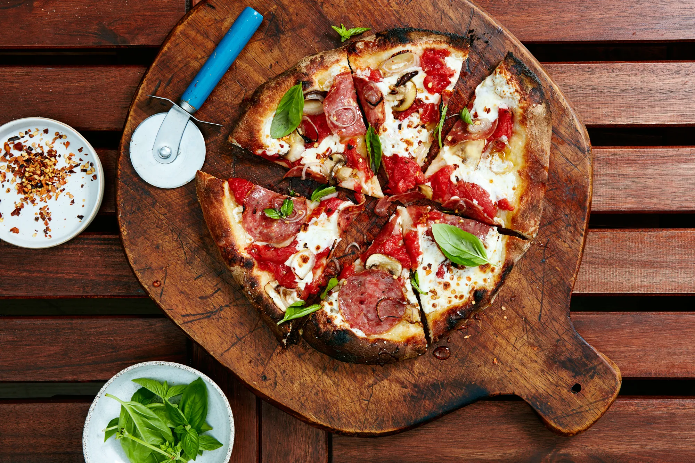

Wood Fired Pizza

Making beautifully charred, wood-fired pizzas at home isn't impossible. With a special pizza-oven attachment, you can instantly turn any kettle charcoal grill into a perfect pie-making machine.
Ingredients
- 1 (28-ounce) can whole peeled tomatoes (preferably San Marzano)
- Cornmeal (for dusting)
- 1 pound pizza dough, divided into 2 even balls
- Kosher salt, freshly ground black pepper
- 8 ounces fresh mozzarella, torn into bite-sized pieces, divided
- 4 medium crimini or button mushrooms (about 2 ounces), thinly sliced, divided
- 2 ounces thinly sliced cured meats, such as pepperoni, soppressata, and/or salami, divided
- 1 shallot, thinly sliced into rings, divided
- Honey, crushed red pepper flakes, and basil leaves (for serving)
Special Equipment:
Directions
- Prepare a charcoal grill for high heat, stacking lit coals in the rear of the grill. Add logs to charcoal. Place pizza-oven attachment on grill; place pizza stone on grate.
- Let grill reach 800°F, about 5 minutes. Meanwhile, drain tomatoes in a colander. Crush into small pieces with your hands, drain again, and transfer to a medium bowl.
- Lightly dust pizza peel with cornmeal. Working with 1 piece at a time, stretch dough, letting it hang off your fingertips and rotating quickly around the edge, until dough is about 10" in diameter (it doesn't need to be a perfect circle). Transfer dough to prepared pizza peel and top with half of tomatoes; season with salt and pepper. Top with half of cheese, mushrooms, meats, and shallot. Season with salt.
- Carefully slide pizza directly onto pizza stone and cook until rear crust begins to bubble and char, 60–90 seconds. Rotate pizza 180° and continue to cook until crust is charred and bubbly on the other side, 60–90 seconds more.
- Using pizza peel or a very large heatproof spatula and tongs, transfer pizza to a cutting board or metal pizza tray. Drizzle with honey and top with red pepper flakes and basil. Slice and serve immediately. Repeat with remaining dough, tomatoes, cheese, mushrooms, meats, and shallot.